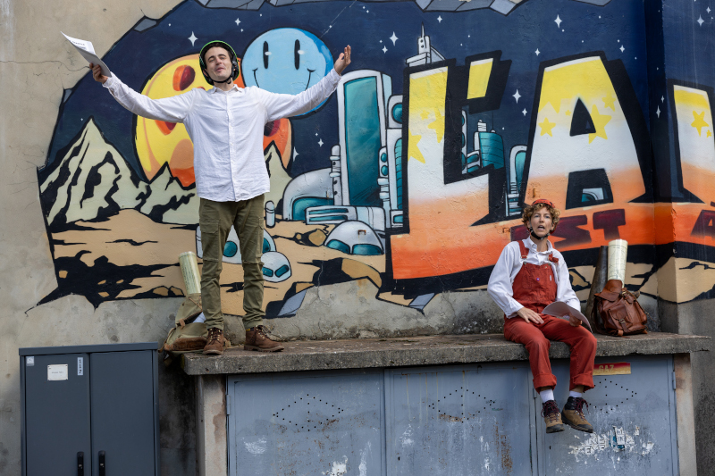
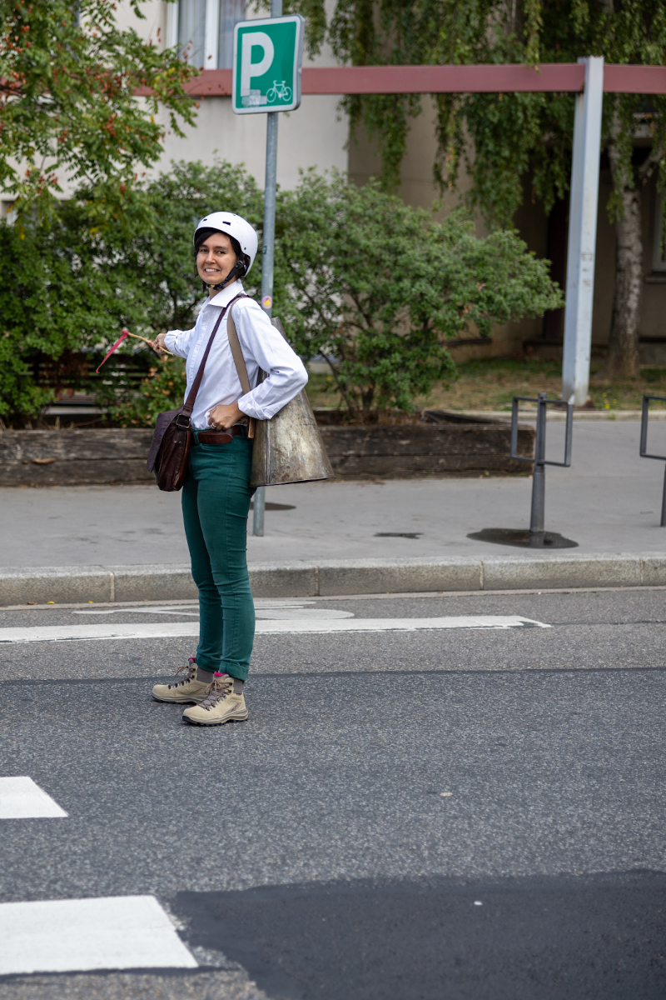
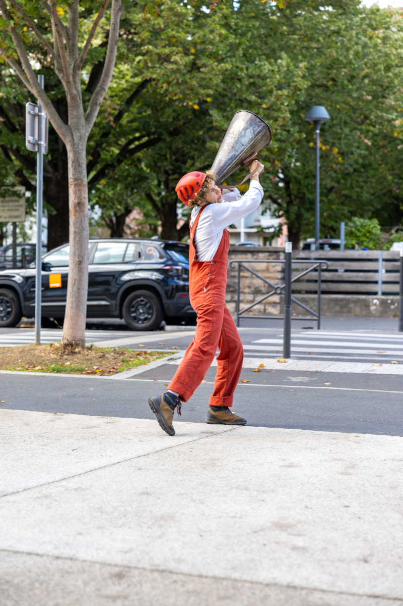
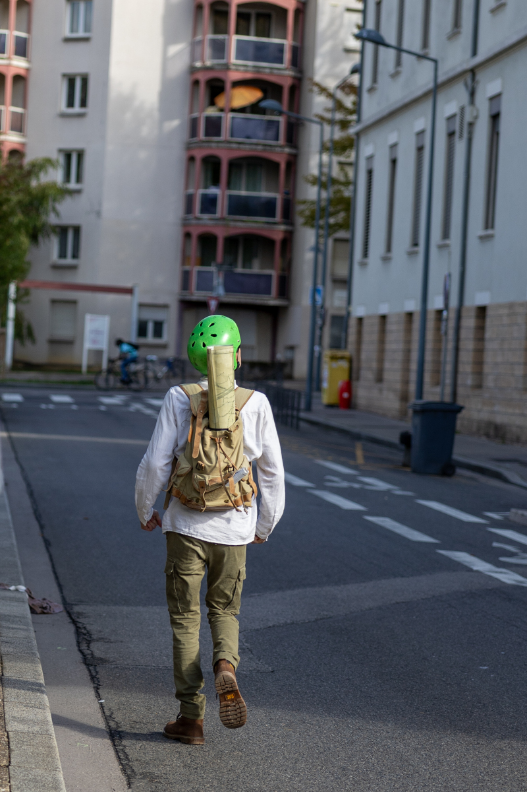
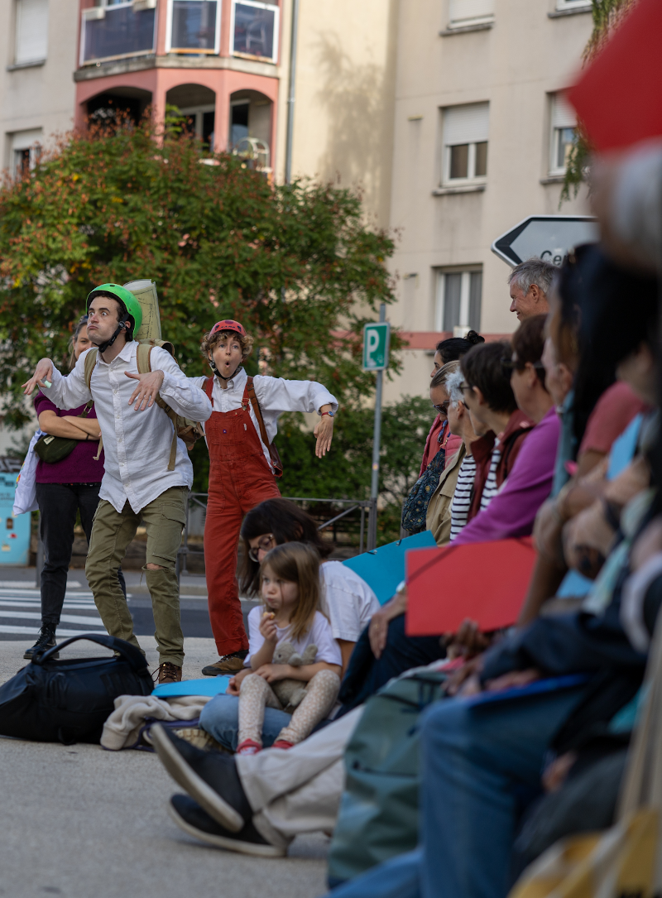
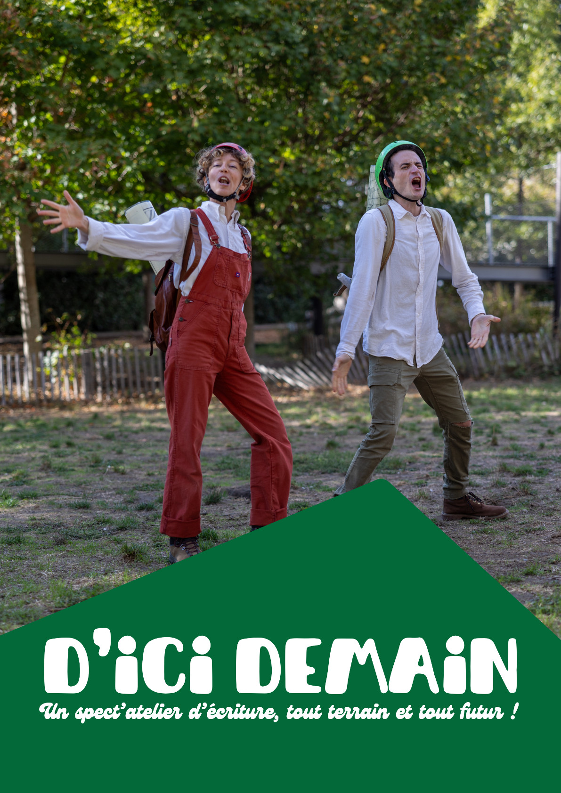

Un spect'atelier d'écriture tout terrain et tout futur !
À vos crayons ! À vos émotions ! La “Colporte”, entreprise journalistique unique en son
genre, débarque et ça déménage ! Ses reporters professionnel·le·s chevronné·e·s et tout
terrain - Feuille-de-Chou, Roule-Toujours et Porte-à-Porte - recherchent des
correspondant·e·s volontaires pour écrire le prochain numéro de leur gazette locale.
Édition spéciale : “Im·possibles futurs” !
De détours en dérives, d’anecdotes historiques en éditos politiques, la “Colporte” vous
embarque dans l’aventure au fil d’un reportage participatif dans les rues, les villes et les
villages où elle pose ses bagages. Véritable tribune tendue aux émotions qui irriguent
nos lieux de vie, cette épopée collaborative invite petit·e·s et grand·e·s à explorer et
raconter des lendemains désirables pour nos parcs et nos quartiers. Alors… À vos rêves
les plus fous pour des futurs plus doux !



De·mains en mains, un théâtre de la participation
Le spectacle D'ici demain tisse les liens entre les lieux d’hier, d’aujourd’hui et de demain,
à travers des dispositifs participatifs et interactifs :
* Une distribution d’articles venus d’hier et d’ailleurs,
récoltés lors de précédentes rencontres - représentation ou atelier -
et qui racontent d’autres lieux, d’autres mains, d’autres demains
* Un atelier d’écriture disséminé tout au long du spectacle,
véritable invitation au récit
de soi, de ses habitudes présentes dans les lieux que l’on côtoie à ses aspirations
grandissantes pour ces endroits
* Une criée de presse,
étendard sonore de ces récits tout juste écrits, insufflant un grain de
grandiloquence aux articles des reporters en herbe, à leurs mots précieux et à leurs
témoignages généreux

“ROULE-TOUJOURS : Alors, vous entendez ? C’est le quartier qui chuchote, qui bruisse dans les feuilles des arbres, il soupire entre les tours, glousse sous les plaques d’égoût, ça gronde ça sursaute ça palpite ça tremblote, trop plein d’émotions !”
Spect'atelier d'écriture - Tout public à partir de 7 ans - Durée 1h00
Texte Malvina Migné & Camille Varenne
Mise en scène Malvina Migné
Jeu Johann Gay & Camille Varenne
Pour aller plus loin : |

Spectacle